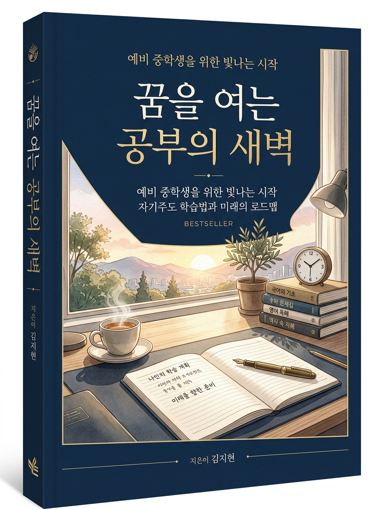

예비 중학생을 위한 빛나는 시작 : 자기주도 학습법과 미래의 로드맵

지은이: 6학년 3반 담임 선생님
정가: 70,000 미소 (경제앱으로 박희망에게 입금 확인)
발행처: 6학년 3반 교실 연구소
본 도서는 구매자 본인만 열람 가능한 공식 라이선스 인증 전자책입니다.
초등학교 시절 성적표에 찍힌 '매우 잘함'과 단원평가 100점 시험지들을 보며 안도하셨습니까? 현직에서 수많은 아이들의 중학교 진학을 지켜봐 온 담임 교사로서 냉정하게 말씀드립니다. 그것은 아이의 진짜 실력이 아니라 ‘단기 기억의 착시’입니다.
초등학교 시험은 전날 문제집 몇 장만 풀어도 누구나 90점을 받습니다. 학급 25명 중 15명 이상이 90점 이상을 받으니 모두가 우등생처럼 보입니다. 하지만 중학교에 올라가면 첫 시험에서 성취도 B, C등급으로 굴러떨어집니다.
최종 성적 = (중간 지필 30%) + (기말 지필 30%) + (수행평가 40%)
• 학생 A: 지필 95점 + 수행평가 감점(-8점) → 최종 87점 (B등급 추락 🔻)
• 학생 B: 지필 86점 + 수행평가 만점(40점) → 최종 91.6점 (A등급 달성 🏆)
이 책은 비싼 학원에 가지 않고도, 교실에서 검증된 상위 1% 자율주도 공부법과 수행평가 감점 0점 공식으로 중학교 내신을 완벽히 장악하도록 돕는 구체적인 행동 강령입니다.
선생님은 기분에 따라 점수를 주지 않습니다. 학교 알리미에 공시된 ‘루브릭(채점 기준표)’에 맞춰 기계적으로 점수를 부여합니다. 상위 1%는 선생님의 채점 기준을 역분석하여 감점 요소를 사전에 지워버립니다.
줄거리 나열은 최하점입니다. 무조건 아래 4단계를 지켜 첫 줄에 결론부터 쓰십시오.
"나는 주인공의 선택이 사회적 편견을 깬 용기 있는 행동이었다고 본다."
"왜냐하면 당시 제도는 여성의 교육 기회를 원천 박탈했기 때문이다."
"작품 2장에서 주인공이 야학에 몰래 찾아가 글을 배우던 장면이 이를 증명한다."
"따라서 이 선택은 현대 사회의 유리천장 극복에도 큰 교훈을 준다."
문제만 많이 푸는 양치기는 중2 때 100% 무너집니다. 틀린 문제는 3색 펜으로 분해하십시오.
| 과목 | 초등 vs 중등 격차 | 상위 1% 시크릿 솔루션 |
|---|---|---|
| 역사 | 연도 단순 암기 | [인과관계 3단 트리] 배경 → 전개 → 결과 노트법 |
| 도덕 | 착하게 살기 상식 | 칸트 의무론 vs 공리주의 3초 구분 & 개념어 논술 |
| 기술가정 | 만들기 실습 | 등각투상법(120도) 도면 작도 & 안전 실습 태도 점수 |
| 정보(SW) | 타이핑/컴퓨터 조작 | 순서도 문제 분해 & 파이썬/엔트리 주석 가산점 획득 |
| 한문 | 한자 쓰기 귀찮음 | 부수 30개로 교과서 어휘 1,000자 뜻 유추 치트키 |
※ 본 페이지를 프린트하거나 복사하여 매일 아침 책상 위에 부착하고 실천하십시오.
1. [수학] __________________________________________________
2. [영어] __________________________________________________
3. [기타] __________________________________________________
• ______________________________________________________
"새벽을 여는 자가 중학교의 주인이 됩니다."
2026-2027 6학년 3반 교실 연구소 발행 | 지은이: 6학년 3반 담임 선생님
교재값: 70,000 미소 공식 납부 완료 승인본